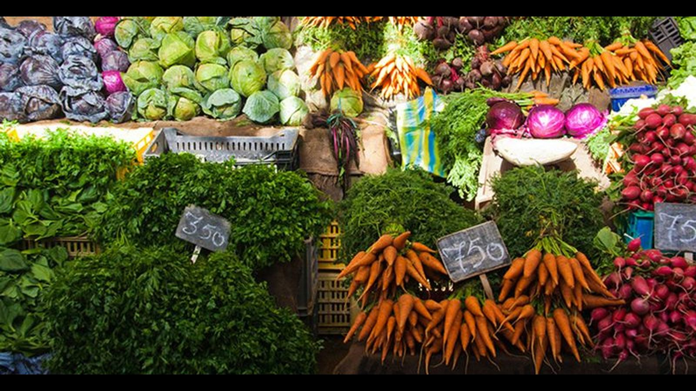

1. Sostenibilidad Ambiental

Gestión de residuos sólidos
Diseño de sistemas comunitarios de reciclaje.
Procesos ambientales
Talleres de educación ambiental para comunidades y empresas.
2. Seguridad Alimentaria

Agricultura urbana
Implementación de huertos en hogares, colegios y espacios públicos.
Nutrición sostenible
Capacitación sobre producción y consumo responsable.
3. Planificación y gestión de proyectos

Diagnósticos participativos
Diagnósticos participativos para comunidades.
Diseño y ejecución
Diseño y ejecución de proyectos sociales, ambientales y educativos.
4. Gestión Territorial

Desarrollo de modelos
Desarrollo de modelos de ordenamiento territorial.
Planificación de áreas
Planificación para la preservación de áreas verdes y recursos naturales.
5. Educación y Formación

Metodologías pedagógicas
Metodologías pedagógicas para el aprendizaje basado en el entorno.
Capacitación territorial
Capacitación en planificación territorial para líderes comunitarios.